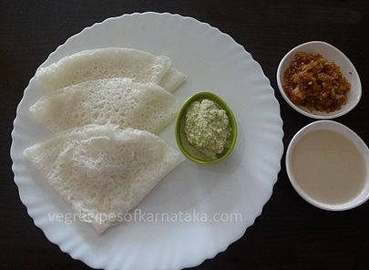
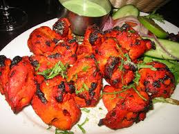
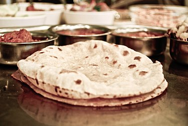

Neer DosaA dosa is a rice pancake, originating from South India, made from a fermented batter. It is somewhat similar to a crepe in appearance. Its main ingredients are rice and black gram, ground together in a fine, smooth batter with a dash of salt. Dosas are a typical part diets throughout South India, but the dish is now popular all over the Indian subcontinent. Traditionally, dosas are served hot along with sambar and chutney.
Biryani Biryani is a mixed rice dish with its origins among the Muslims of the Indian subcontinent.It can be compared to mixing a curry, later combining it with semi-cooked rice separately. This dish is especially popular throughout the Indian subcontinent, as well as among its diaspora. It is also prepared in other regions such as Iraqi Kurdistan.It is made with Indian spices, rice, meat (chicken, beef, goat, pork, lamb, prawn, or fish), vegetables or eggs.
Biryani is a mixed rice dish with its origins among the Muslims of the Indian subcontinent.It can be compared to mixing a curry, later combining it with semi-cooked rice separately. This dish is especially popular throughout the Indian subcontinent, as well as among its diaspora. It is also prepared in other regions such as Iraqi Kurdistan.It is made with Indian spices, rice, meat (chicken, beef, goat, pork, lamb, prawn, or fish), vegetables or eggs.
Chicken butter masala Kundan Lal Jaggi was the inventor of Butter Chicken [8] [9]This dish was developed in the year 1947 in a restaurant owned by three Punjabi restaurateurs: Kundan Lal Jaggi, Kundan Lal Gujral and Thakur Dass,who were the founders of Moti Mahal restaurant in Delhi, India. The dish was made "by chance" by mixing the leftover chicken in a tomato gravy, rich in butter and cream.The dish was made "by chance" by mixing the leftover
Kundan Lal Jaggi was the inventor of Butter Chicken [8] [9]This dish was developed in the year 1947 in a restaurant owned by three Punjabi restaurateurs: Kundan Lal Jaggi, Kundan Lal Gujral and Thakur Dass,who were the founders of Moti Mahal restaurant in Delhi, India. The dish was made "by chance" by mixing the leftover chicken in a tomato gravy, rich in butter and cream.The dish was made "by chance" by mixing the leftover
TandooriDishes similar to tandoori chicken may have existed during the Harappan civilization. According to eminent archeologist and vice-chancellor of Deccan College Professor Vasant Shinde, the earliest evidence for a dish similar to tandoori chicken can be found in the Harappan civilization and dates back to 3000 BC. His team has found ancient ovens at Harappan sites which are similar to the tandoors that are used in the state of Punjab. Physical remains of chicken bones with char marks have also been unearthed.[12][13][14] Sushruta Samhita records meat being cooked in an oven (kandu) after marinating it in spices like black mustard (rai) powder and fragrant spices.
Chitranna Chitranna (Kannada: ಚಿತ್ರಾನ್ನ; also known as lemon-rice) is a rice-based dish widely prepared in South India. It is prepared by mixing cooked rice with a special seasoning called Oggarane or Gojju. Characteristic for the seasoning are mustard seeds, fried lentils, peanuts, curry leaves, chillies, lemon juice and other optional items such as scrapes of unripe mango. Added Turmeric powder gives Chitranna its yellow color. Garlic and onions are also used in the seasoning by some, although traditionally they do not form part of the recipe.The dish is especially popular in the south Indian state of Karnataka, where it has become a part of the daily diet.
Chitranna (Kannada: ಚಿತ್ರಾನ್ನ; also known as lemon-rice) is a rice-based dish widely prepared in South India. It is prepared by mixing cooked rice with a special seasoning called Oggarane or Gojju. Characteristic for the seasoning are mustard seeds, fried lentils, peanuts, curry leaves, chillies, lemon juice and other optional items such as scrapes of unripe mango. Added Turmeric powder gives Chitranna its yellow color. Garlic and onions are also used in the seasoning by some, although traditionally they do not form part of the recipe.The dish is especially popular in the south Indian state of Karnataka, where it has become a part of the daily diet.
ChapatiChapati (alternatively spelled chapatti, chappati, chapathi, or chappathi), (pronounced as IAST: capātī, capāṭī, cāpāṭi), also known as roti, safati, shabaati, phulka and (in the Maldives) roshi,[1] is an unleavened flatbread originating from the Indian subcontinent and staple in India, Nepal, Bangladesh, Pakistan, Sri Lanka, East Africa and the Caribbean.[2] Chapatis are made of whole-wheat flour known as atta, mixed into dough with water, edible oil and optional salt in a mixing utensil called a parat, and is cooked on a tava (flat skillet).[3][4]It is a common staple in the Indian subcontinent as well as amongst expatriates from the Indian subcontinent throughout the world.